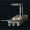
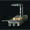

There are four tiers of each type of hacking container. Each of the four tiers of containers typically contains one type of item, but in rare cases will contain an item in the next highest tier. The most rare items can only be found in the fourth tier container. The tiers can be slightly misleading, as the hacking difficulty seems to be hardest for the tier 3 containers.
Caskets are found in the Serpentis Survey Site in the Skeleton Comet in Deltole. They require a Data Analyzer to access them. They reliably drop Serpentis Materials and Compounds, and often drop Serpentis Artifacts and Prototypes as well. On the market, these are found under Manufacture & Research, Materials, Faction Materials, Serpentis. Note that the Serpentis Materials and Compounds can also be found in standard Serpentis Data Sites.
| Container Name | Tier | Hacking Difficulty |

Materials and Compounds
|
Artifacts and Prototypes
|
|---|---|---|---|---|
| Fiction | 1 | Low | Current Amplifier | Serpentis Plain Target Guider |
| Rumor | 2 | Moderate | Second-hand Parts | Serpentis Basic Target Guider |
| Authentic | 3 | Hardest | Heat Depressor | Serpentis Complex Target Guider |
| Fact | 4 | Hard | Internal Bulkhead | Serpentis 3D Scanner Gamut |
| 5 | Mainframe Bit | Serpentis Multi-tasking Processor |
Monuments can be found in three locations in Deltole: the Yan Jung Ruins (Deltole VI - Moon 1, static cosmic signature JTD-372), the Ancient Ruins in the Skeleton Comet (requires a Smuggler Knot Lock to access), or the final room of the Yan Jung Relic Site (requires a Gargoyle Passkey to access). They require a Relic Analyzer to access them. They reliably drop Yan Jung Materials and Compounds, and often drop Yan Jung Artifacts and Prototypes as well. On the market, these are found under Manufacture & Research, Materials, Faction Materials, Yan Jung.
| Container Name | Tier | Hacking Difficulty |

Materials and Compounds
|
Artifacts and Prototypes
|
|---|---|---|---|---|
| Ruined | 1 | Low | Yan Jung Null Shell | Yan Jung Crystal Cylinder |
| Broken | 2 | Moderate | Yan Jung Glass Scale | Yan Jung Paradox Box |
| Impaired | 3 | Hardest | Yan Jung Silk Armor | Yan Jung Void Machine |
| Busted | 4 | Hard | Yan Jung Plenary Wire | Yan Jung Thunder Kite |
| 5 | Yan Jung Nano Fabric | Yan Jung Tachyon Stetoscope |
Crystals can be found in the same three locations as Monuments. They require a Relic Analyzer to access them. They reliably drop both Yan Jung Decryptors, and the Yan Jung Technology skill book. On the market, the decryptors are found under Manufacture & Research, Materials, Faction Materials, Yan Jung.
| Container Name | Tier | Hacking Difficulty |
Decryptors
|
Skill Books
|
|---|---|---|---|---|
| Cracked | 1 | Low | Yan Jung Vellum Etch | Yan Jung Technology |
| Fractured | 2 | Moderate | Yan Jung Info Matrix | Yan Jung Technology |
| Pulsing | 3 | Hardest | Yan Jung Semiotic Theory | Yan Jung Technology |
| Intact | 4 | Hard | Yan Jung Trigonometric Laws | Yan Jung Technology |
| 5 | Yan Jung Singularity Fact Sheet | Yan Jung Technology |
The hacking mini-game involves revealing nodes on a grid until you find the System Core. Some nodes will impede your progress, while some others provide tools to help you.
Your analyzer module has two important attributes: coherence and strength. Coherence is a measure of how much "damage" you can take before failing the hack. Strength is a measure of how much "damage" you inflict on nodes that impede your progress.
The Anti-Virus and Firewall nodes are the two most common that impede your progress. In the table below, the "c" is the coherence of these nodes (how much total "damage" you must inflict on it). The "s" is the strength of these nodes (how much "damage" it inflicts on you).
For example, if your analyzer has a strength of 30, and you attack a node rated 40c / 20s. You will reduce its coherence down by 30 (to 10), but take 20 damage to your current coherence. If your strength is equal or higher than a node's current coherence, your own coherence will not be damaged.
Tools that you find can be used to either increase your coherence directly, or provide bonuses when attacking nodes.
More difficult hacking containers may have additional nodes and tools. Once a Restoration node is revealed, it will restore coherence to other nodes that impede your progress. Once a Virus Suppressor node is revealed, it will reduce your analyzer's attack strength. In most circumstances, it is important to clear Restoration and Virus Suppressor nodes as quickly as possible. Traveling along the edge of the grid towards the far corners is typically the safest way of successfully hacking the most difficult containers.
| Hacking Difficulty | System Core | Anti-Virus | Firewall | Other Nodes |
|---|---|---|---|---|
| Low | 50c / 10s | 30c / 30s | 40c / 20s | None |
| Moderate | 70c / 10s | 40c / 40s | 50c / 20s | None |
| Hard | 70c / 10s | 50c / 40s | 80c / 20s |
Restoration (80c / 10s)
|
| Hardest | 90c / 10s | 60c / 40s | 90c / 20s |
Virus Suppressor (60c / 15s)
|